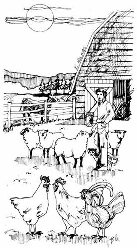

Almost every non-vegetarian homesteader dreams of fresh meat, eggs and milk from his own place . . . but may be rudely awakened when he counts the initial cost of all the livestock he hopes to keep. Fortunately, there are ways to stock your land with healthy animals at little expense . . . or do without them entirely.
If you're beginning a small flock of poultry, for instance. you might check with a nearby hatchery for discards. Such a business has days when orders are exceeded by the number of newly hatched birds . . . and if no facilities are available to keep the surplus chicks, they're destroyed and dumped into the garbage can. (This is done only as a last resort, since the owner has an investment in labor, eggs, incubators and heat used for hatching.)
If you buy chicks in the usual way, remember that almost all hatcheries sell them by sex and that pullets are much more expensive. Cockerels, however, are cheap . . . and, since sexing chicks isn't an exact science, every lot of 100 supposed males will contain a few females. If you don't like those odds, "straight run" chicks-in theory, half pullets and half cockerels-are usually priced at about half the going rate for sexed pullets.
It's not necessary to buy a year's supply of chicks at once. You can start with a dozen or two and begin another miniflock several weeks later. Just be sure the birds will be feathered out before snow falls.
Here's another approach to stocking the poultry yard: A neighbor who keeps any of the heavy breeds of chickens may sell-or, in some cases, give-you a "clucking hen". (A heavy breed is suggested for this purpose because lighter fowl such as leghorns are great on laying but are generally very indifferent mothers.)
A clucking hen is a gal who wants to set on a batch of eggs and makes quite a pest of herself telling everyone about it. If you get one of these biddies, get some eggs too . . . by providing a gentleman to run around the barnyard with the ladies. This is an easy way to start a dozen or more chicks, since the hen does most of the work.
In the meantime, while you wait for your pullets to start production, you may be able to buy eggs from a neighbor-a dozen or two at a time-at 25% or so below retail prices.
Other livestock can also be come by at little cost. For example, goat farmers often destroy baby billies shortly after the mother's milk flow picks up. One or two male kids obtained free or for a nominal sum will soon grow into an excellent meat supply.
A weaned pig-or preferably two-can be had at varying prices dependent upon the market and the size of the animal . . . and in six months or less, each will gorge himself into 200 pounds of pork. Watch the classified ads in the local papers. If you're offered males, be sure they've been castrated (or be prepared to have it done). Old-timers declare that there's a decided difference in flavor between boar and barrow meat. (They're right!-MOTHER.)
You can often start a flock of sheep by searching for disowned lambs. Many owners won't bother with a baby which is rejected by its mother and will gladly sell it for a small price or even give it away. You'll pay a price in labor and patience while the little creature is bottle fed, but-once on grass-it's a 24-hour-a-day lamb chop and wool factory.
If you want to raise a calf for beef, you can make a private treaty with a farmer or visit a weekly stock sale in your area. In a dozen years of experience and observation, however, I've found no quick way to turn such a purchase into meat. Your animal will take a year to a year and a half to reach slaughter size . . . and then you'll have the problem of butchering a 1,000-pound steer or getting it done for you. Here in Ohio, do-gooders have pushed through laws under which very few custom butchers can operate, and this service is hard to find.
We've decided that it's more satisfactory for us to buy a hindquarter of beef through classified ads or through inquiry. If we needed a whole carcass and had storage facilities for it, however, I'd follow the advice of a lifelong farmer friend. He much prefers to buy a seven- or eight-year-old cow, confine and feed the animal grain for about two months and then butcher her. In his opinion, such a critter supplies far better steaks and roasts than any 18-month-old steer. (In addition, an aged cow is unlikely to have received hormone treatments or other dangerous drugs usually given commercial feedlot animals.)
A similar compromise approach to your milk supply might work out well in case it's not economical or convenient for you to keep a cow. If you live near a farmer who has a dairy project-and state laws will allow you to purchase raw milk-you may be able to buy your milk by the gallon . . . a good deal for several reasons.
First, there's the obvious difference in price. We pay our neighbor at least 40% less than the current retail rate for half gallons.
A second advantage to farm-bought milk is the higher cream content. Commercial dairies package their product with just enough butterfat to be within the law, but whole milk direct from the cow will give you between a half pint and a pint of cream in each gallon, ready to be skimmed off after a day's cooling.
Raw milk from a clean, disease-free farm also gives you added nutritional benefits . . . but if you prefer to pasteurize, you can easily heat a kettleful to the correct temperature at home.
An interesting sidelight on "progress": In the days when all dairy farmers poured their milk into cans, the containers were collected from the farms every day. Then modern technology developed the bulk storage tank for the producer and the bulk tank truck for transport. Pickups are now made only every other day . . . and some milk is more than two days old when it reaches the bottling plant.
Another good point of the old system was that all the cans were identified and each farm's supply could be checked on a given day for bacteria count, dirt or any other factor. Nowadays all milk is slopped into the same tank for the trip to the dairy, and any one supplier's output can be tested only by actual visit to the farm. You may, in fact, enjoy more uniform quality in the "perfect food" if you get it directly from a reliable neighbor. (In some areas this may be hard to arrange because of complex state and local regulations on the sale of milk direct from the farm.-MOTHER.)
Let your personal preference and firsthand experience guide you as you go about selecting the livestock you will and won't raise on your new country place. And may the suggestions I've made here help you obtain your initial mini-flocks and small herds-or the meat, milk and eggs you want-as inexpensively as possible.
|
 |
|
|